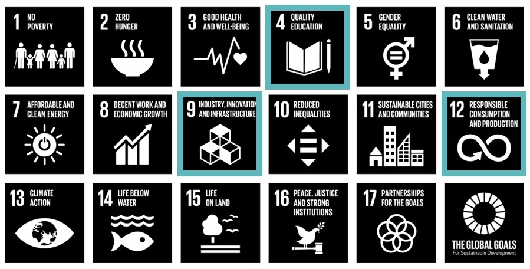

Loredge is determined to help the global community reaching the Sustainable Development Goals by 2030, and the UN goals are aligned with all our activities and initiatives. Below you can learn more about how Loredge work to progress three purposely selected goals.
Goal 4: Quality Education
Loredge is helping achieving inclusive and equitable quality education and promote lifelong learning opportunities by creating global access to knowledge sharing and collaborative learning, educational tools, and by teaming up with partners that share our vision. Through Loredge, knowledge is democratized.
Goal 9: Industry, Innovation and Infrastructure
Innovation is at our core as free thinkers, and Loredge are fostering innovation by bringing new technological solutions that aim to optimize knowledge intake by reducing time consuming and inefficient steps in the learning process. Loredge helps other innovators to spend their valuable time on groundbreaking ideas.
Goal 12: Responsible consumption and production
Loredge is working to ensure sustainable consumption patterns by providing a digital and environmentally friendly solution to a field traditionally relying on consumable resources. Loredge promotes the consumption of knowledge, not paper.
In addition, Loredge is mindful about our consumption and production patterns.